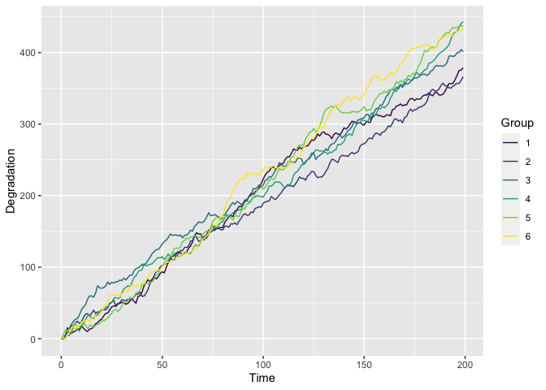
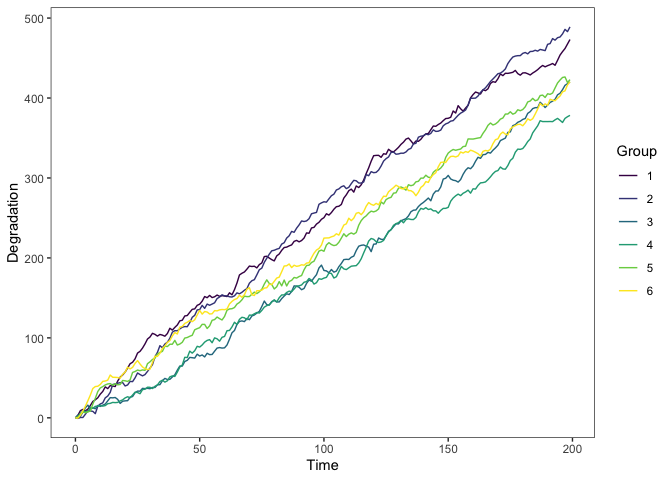
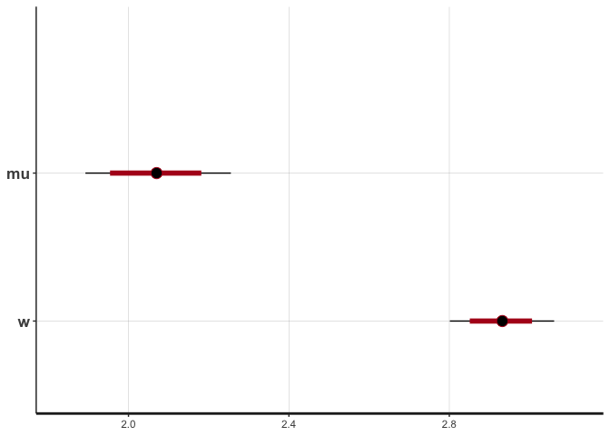
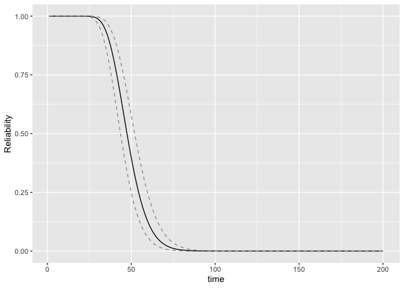
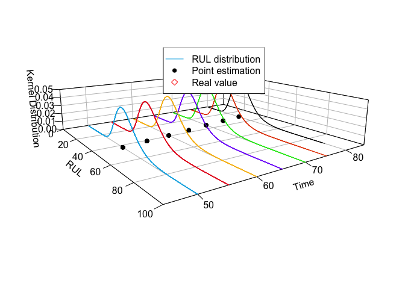
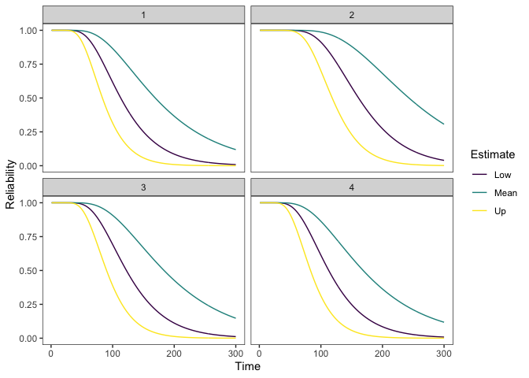
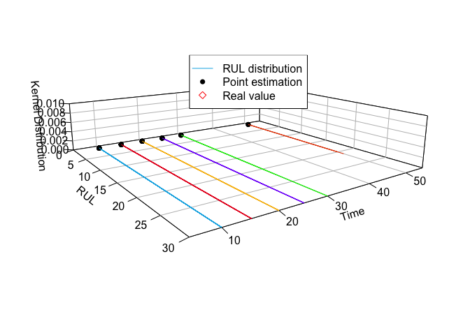

Overview
The goal of sdp is to provide engineers with practical guidance on how to analyze data using common degradation models: Wiener process, Gamma process, and Inverse Gaussian process. For each degradation process, we provide data simulation generation, statistical inference, and remaining useful life prognostics.
Installation
You can install the development version of sdp from GitHub with:
# install.packages("devtools")
devtools::install_github("liangliangzhuang/sdp")Getting started
sdp functions fall into five main categories:
“Simulate” which can simulate a group of degradation.
“Inference” which contains maximum likelihood estimator (MLE) and Bayesian method.
“Plot” which contains several visualization functions, mainly for plotting degradation paths, reliability and remaining useful life. See
plot_path(),RUL_plot(),Reliability_plot,Reliability_cowplot(), andRUL_3D_density().“Others” which contains some useful functions. See
cumsub().
Example: Simulated Data
This is a basic example which shows you how to solve a common problem.
We use sim_dat() to generate a simulated Wiener degradation process, where group is 6, time epoch is t = 1:200. We denote the parameters are μ = 2, σ = 3. The output is a list: (i) first part of the list is the amount of degradation of the simulated data, (ii) second part is the increment of its degradation.
dat <- sim_dat(group = 5, t = 1:200, para = c(2,3),
process = "Wiener",type = "classical",
s = NULL, rel = NULL)
str(dat)
#> List of 1
#> $ :'data.frame': 200 obs. of 6 variables:
#> ..$ Time: num [1:200] 0 1 2 3 4 5 6 7 8 9 ...
#> ..$ 1 : num [1:200] 0 2.77 9.79 12.08 16.76 ...
#> ..$ 2 : num [1:200] 0 4.99 10.29 12.83 19.55 ...
#> ..$ 3 : num [1:200] 0 4.63 6.82 6.56 11.25 ...
#> ..$ 4 : num [1:200] 0 -6.44 -4.07 -3.55 -0.47 ...
#> ..$ 5 : num [1:200] 0 1.339 -2.006 -0.848 -0.868 ...Using plot_path() function to plot the simulated degradation data.
plot_path(dat)
The object is a ggplot, so you can add other related function to change the plot. For example, let’s change the theme pattern.
plot_path(dat) + theme_bw() +
theme(panel.grid = element_blank())
Inference
For this section, we provide a tutorial for parameter estimates using MLE and Bayesian methods. Both methods are integrated in the sta_infer() function and just need to be set in the "method".
MLE
The output of MLE is the dataframe contains point and interval estimates.
mle_fit = sta_infer(method = "MLE", process = "Wiener", type = "classical", data = dat)
mle_fit
#> low mean up
#> [1,] 1.8845 2.0666 2.2487
#> [2,] 2.8015 2.9303 3.0590Bayes
The output of Bayes is the resampling in rstan. According to this object, we can do further process, e.g., prognostic, check an so on.
bayes_fit = sta_infer(method = "Bayes", process = "Wiener", type = "classical", data = dat)
#> Running /Library/Frameworks/R.framework/Resources/bin/R CMD SHLIB foo.c
#> clang -arch arm64 -I"/Library/Frameworks/R.framework/Resources/include" -DNDEBUG -I"/Library/Frameworks/R.framework/Versions/4.2-arm64/Resources/library/Rcpp/include/" -I"/Library/Frameworks/R.framework/Versions/4.2-arm64/Resources/library/RcppEigen/include/" -I"/Library/Frameworks/R.framework/Versions/4.2-arm64/Resources/library/RcppEigen/include/unsupported" -I"/Library/Frameworks/R.framework/Versions/4.2-arm64/Resources/library/BH/include" -I"/Library/Frameworks/R.framework/Versions/4.2-arm64/Resources/library/StanHeaders/include/src/" -I"/Library/Frameworks/R.framework/Versions/4.2-arm64/Resources/library/StanHeaders/include/" -I"/Library/Frameworks/R.framework/Versions/4.2-arm64/Resources/library/RcppParallel/include/" -I"/Library/Frameworks/R.framework/Versions/4.2-arm64/Resources/library/rstan/include" -DEIGEN_NO_DEBUG -DBOOST_DISABLE_ASSERTS -DBOOST_PENDING_INTEGER_LOG2_HPP -DSTAN_THREADS -DBOOST_NO_AUTO_PTR -include '/Library/Frameworks/R.framework/Versions/4.2-arm64/Resources/library/StanHeaders/include/stan/math/prim/mat/fun/Eigen.hpp' -D_REENTRANT -DRCPP_PARALLEL_USE_TBB=1 -I/opt/R/arm64/include -fPIC -falign-functions=64 -Wall -g -O2 -c foo.c -o foo.o
#> In file included from <built-in>:1:
#> In file included from /Library/Frameworks/R.framework/Versions/4.2-arm64/Resources/library/StanHeaders/include/stan/math/prim/mat/fun/Eigen.hpp:13:
#> In file included from /Library/Frameworks/R.framework/Versions/4.2-arm64/Resources/library/RcppEigen/include/Eigen/Dense:1:
#> In file included from /Library/Frameworks/R.framework/Versions/4.2-arm64/Resources/library/RcppEigen/include/Eigen/Core:88:
#> /Library/Frameworks/R.framework/Versions/4.2-arm64/Resources/library/RcppEigen/include/Eigen/src/Core/util/Macros.h:628:1: error: unknown type name 'namespace'
#> namespace Eigen {
#> ^
#> /Library/Frameworks/R.framework/Versions/4.2-arm64/Resources/library/RcppEigen/include/Eigen/src/Core/util/Macros.h:628:16: error: expected ';' after top level declarator
#> namespace Eigen {
#> ^
#> ;
#> In file included from <built-in>:1:
#> In file included from /Library/Frameworks/R.framework/Versions/4.2-arm64/Resources/library/StanHeaders/include/stan/math/prim/mat/fun/Eigen.hpp:13:
#> In file included from /Library/Frameworks/R.framework/Versions/4.2-arm64/Resources/library/RcppEigen/include/Eigen/Dense:1:
#> /Library/Frameworks/R.framework/Versions/4.2-arm64/Resources/library/RcppEigen/include/Eigen/Core:96:10: fatal error: 'complex' file not found
#> #include <complex>
#> ^~~~~~~~~
#> 3 errors generated.
#> make: *** [foo.o] Error 1
bayes_fit$summary
#> 2.5% mean 97.5%
#> mu 1.8926 2.0667 2.2551
#> w 2.8014 2.9305 3.0614
# print(fit1, probs = c(0.025,0.5,0.975),pars = c("mu","w"))
rstan::plot(bayes_fit$stan_re)
rstan::traceplot(bayes_fit$stan_re,pars = c("mu","w"), inc_warmup = T,nrow = 1) + theme(legend.position = "top")
Reliability and RUL
Based on the statistical inference, we use Reliability() and RUL() to calculate the Reliability and RUL, respectively. Then using Reliability_plot() and RUL_plot() to plot.
reb = Reliability(t = 40, threshold = 100, par = mle_fit[,2],process = "Wiener",type = "classical")
Reliability_plot(R_time = 1:200,sum_para = mle_fit,threshold = 100,
process = "Wiener",type = "classical")
rul = RUL(t = 1:100, cur_time = 80, threshold = 150, data = dat[[1]],
par = mle_fit[,2], process = "Wiener", type = "classical")
rul
#> [[1]]
#> [1] 6.562350e-120 9.958922e-57 7.463999e-36 1.588580e-25 2.097537e-19
#> [6] 2.209597e-15 1.483063e-12 1.789043e-10 6.893856e-09 1.197516e-07
#> [11] 1.167103e-06 7.382270e-06 3.351432e-05 1.173264e-04 3.338110e-04
#> [16] 8.028331e-04 1.681933e-03 3.141770e-03 5.329674e-03 8.332181e-03
#> [21] 1.214779e-02 1.667712e-02 2.173192e-02 2.705906e-02 3.237306e-02
#> [26] 3.738989e-02 4.185634e-02 4.557129e-02 4.839755e-02 5.026481e-02
#> [31] 5.116528e-02 5.114435e-02 5.028841e-02 4.871195e-02 4.654513e-02
#> [36] 4.392315e-02 4.097761e-02 3.783020e-02 3.458853e-02 3.134391e-02
#> [41] 2.817054e-02 2.512599e-02 2.225243e-02 1.957832e-02 1.712046e-02
#> [46] 1.488600e-02 1.287442e-02 1.107938e-02 9.490295e-03 8.093703e-03
#> [51] 6.874402e-03 5.816347e-03 4.903348e-03 4.119589e-03 3.449997e-03
#> [56] 2.880487e-03 2.398108e-03 1.991108e-03 1.648950e-03 1.362278e-03
#> [61] 1.122856e-03 9.234933e-04 7.579543e-04 6.208640e-04 5.076171e-04
#> [66] 4.142872e-04 3.375432e-04 2.745708e-04 2.230023e-04 1.808526e-04
#> [71] 1.464636e-04 1.184544e-04 9.567874e-05 7.718738e-05 6.219663e-05
#> [76] 5.006091e-05 4.024968e-05 3.232790e-05 2.593954e-05 2.079382e-05
#> [81] 1.665367e-05 1.332617e-05 1.065454e-05 8.511635e-06 6.794434e-06
#> [86] 5.419616e-06 4.319873e-06 3.440902e-06 2.738946e-06 2.178789e-06
#> [91] 1.732118e-06 1.376196e-06 1.092779e-06 8.672473e-07 6.878918e-07
#> [96] 5.453460e-07 4.321222e-07 3.422401e-07 2.709269e-07 2.143765e-07
#>
#> [[2]]
#> [1] 1.248737e-01 3.540952e-02 1.517206e-02 7.720847e-03 4.320311e-03
#> [6] 2.567743e-03 1.591137e-03 1.016601e-03 6.648992e-04 4.429818e-04
#> [11] 2.995807e-04 2.051214e-04 1.419121e-04 9.905394e-05 6.966880e-05
#> [16] 4.932784e-05 3.513044e-05 2.514914e-05 1.808706e-05 1.306210e-05
#> [21] 9.468523e-06 6.886923e-06 5.024709e-06 3.676421e-06 2.696919e-06
#> [26] 1.983128e-06 1.461487e-06 1.079272e-06 7.985395e-07 5.918815e-07
#> [31] 4.394360e-07 3.267631e-07 2.433354e-07 1.814575e-07 1.354899e-07
#> [36] 1.012907e-07 7.581139e-08 5.680339e-08 4.260537e-08 3.198764e-08
#> [41] 2.403845e-08 1.808080e-08 1.361124e-08 1.025485e-08 7.732096e-09
#> [46] 5.834266e-09 4.405373e-09 3.328692e-09 2.516790e-09 1.904107e-09
#> [51] 1.441437e-09 1.091819e-09 8.274576e-10 6.274407e-10 4.760172e-10
#> [56] 3.613165e-10 2.743850e-10 2.084651e-10 1.584527e-10 1.204905e-10
#> [61] 9.166149e-11 6.975828e-11 5.310971e-11 4.044977e-11 3.081890e-11
#> [66] 2.348941e-11 1.790922e-11 1.365922e-11 1.042116e-11 7.953219e-12
#> [71] 6.071592e-12 4.636512e-12 3.541650e-12 2.706089e-12 2.068223e-12
#> [76] 1.581133e-12 1.209072e-12 9.247952e-13 7.075319e-13 5.414405e-13
#> [81] 4.144357e-13 3.172947e-13 2.429771e-13 1.861068e-13 1.425776e-13
#> [86] 1.092523e-13 8.373324e-14 6.418760e-14 4.921398e-14 3.774053e-14
#> [91] 2.894729e-14 2.220682e-14 1.703891e-14 1.307592e-14 1.003637e-14
#> [96] 7.704654e-15 5.915620e-15 4.542726e-15 3.488997e-15 2.680100e-15
#>
#> [[3]]
#> [1] -4.425174e-75 -7.839806e-41 -1.332923e-29 -4.272805e-24 -7.213329e-21
#> [6] -8.951327e-19 -2.517576e-17 -2.812743e-16 -1.703269e-15 -6.732119e-15
#> [11] -1.954021e-14 -4.504374e-14 -8.704463e-14 -1.465429e-13 -2.210646e-13
#> [16] -3.051669e-13 -3.917237e-13 -4.734155e-13 -5.439653e-13 -5.988960e-13
#> [21] -6.357915e-13 -6.541668e-13 -6.550986e-13 -6.407557e-13 -6.139330e-13
#> [26] -5.776536e-13 -5.348659e-13 -4.882398e-13 -4.400503e-13 -3.921307e-13
#> [31] -3.458766e-13 -3.022812e-13 -2.619899e-13 -2.253609e-13 -1.925266e-13
#> [36] -1.634500e-13 -1.379734e-13 -1.158594e-13 -9.682316e-14 -8.055768e-14
#> [41] -6.675212e-14 -5.510480e-14 -4.533179e-14 -3.717206e-14 -3.039006e-14
#> [46] -2.477648e-14 -2.014766e-14 -1.634417e-14 -1.322892e-14 -1.068497e-14
#> [51] -8.613281e-15 -6.930497e-15 -5.566863e-15 -4.464298e-15 -3.574659e-15
#> [56] -2.858212e-15 -2.282280e-15 -1.820085e-15 -1.449755e-15 -1.153470e-15
#> [61] -9.167576e-16 -7.278872e-16 -5.773761e-16 -4.575734e-16 -3.623184e-16
#> [66] -2.866601e-16 -2.266257e-16 -1.790331e-16 -1.413369e-16 -1.115040e-16
#> [71] -8.791286e-17 -6.927149e-17 -5.455182e-17 -4.293665e-17 -3.377711e-17
#> [76] -2.655844e-17 -2.087267e-17 -1.639678e-17 -1.287516e-17 -1.010575e-17
#> [81] -7.928929e-18 -6.218672e-18 -4.875567e-18 -3.821234e-18 -2.993915e-18
#> [86] -2.344978e-18 -1.836146e-18 -1.437309e-18 -1.124794e-18 -8.799961e-19
#> [91] -6.882999e-19 -5.382309e-19 -4.207825e-19 -3.288886e-19 -2.570077e-19
#> [96] -2.007952e-19 -1.568461e-19 -1.224928e-19 -9.564619e-20 -7.467025e-20
#>
#> [[4]]
#> [1] -8.766956e-26 -4.027105e-15 -9.406236e-12 -3.534153e-10 -2.612672e-09
#> [6] -8.678030e-09 -1.838072e-08 -2.952192e-08 -3.954802e-08 -4.675787e-08
#> [11] -5.055822e-08 -5.118348e-08 -4.930032e-08 -4.569653e-08 -4.109669e-08
#> [16] -3.608055e-08 -3.106615e-08 -2.632641e-08 -2.201857e-08 -1.821509e-08
#> [21] -1.493067e-08 -1.214362e-08 -9.811606e-09 -7.882582e-09 -6.301969e-09
#> [26] -5.017065e-09 -3.979513e-09 -3.146450e-09 -2.480823e-09 -1.951206e-09
#> [31] -1.531335e-09 -1.199520e-09 -9.380153e-10 -7.324208e-10 -5.711263e-10
#> [36] -4.448237e-10 -3.460857e-10 -2.690102e-10 -2.089231e-10 -1.621344e-10
#> [41] -1.257389e-10 -9.745410e-11 -7.549074e-11 -5.844870e-11 -4.523404e-11
#> [46] -3.499329e-11 -2.706143e-11 -2.092085e-11 -1.616905e-11 -1.249336e-11
#> [51] -9.651074e-12 -7.453906e-12 -5.755908e-12 -4.444000e-12 -3.430620e-12
#> [56] -2.647992e-12 -2.043679e-12 -1.577128e-12 -1.216983e-12 -9.390116e-13
#> [61] -7.244866e-13 -5.589424e-13 -4.312061e-13 -3.326498e-13 -2.566123e-13
#> [66] -1.979513e-13 -1.526978e-13 -1.177885e-13 -9.085966e-14 -7.008734e-14
#> [71] -5.406424e-14 -4.170464e-14 -3.217097e-14 -2.481708e-14 -1.914456e-14
#> [76] -1.476895e-14 -1.139369e-14 -8.790033e-15 -6.781554e-15 -5.232163e-15
#> [81] -4.036895e-15 -3.114787e-15 -2.403393e-15 -1.854545e-15 -1.431088e-15
#> [86] -1.104365e-15 -8.522681e-16 -6.577454e-16 -5.076421e-16 -3.918104e-16
#> [91] -3.024219e-16 -2.334369e-16 -1.801960e-16 -1.391042e-16 -1.073879e-16
#> [96] -8.290675e-17 -6.400951e-17 -4.942187e-17 -3.816050e-17 -2.946653e-17
#>
#> [[5]]
#> [1] -7.270847e-07 -5.380138e-05 -1.473119e-04 -1.895038e-04 -1.849797e-04
#> [6] -1.593179e-04 -1.286752e-04 -1.002867e-04 -7.655531e-05 -5.771739e-05
#> [11] -4.318890e-05 -3.217243e-05 -2.390418e-05 -1.773706e-05 -1.315416e-05
#> [16] -9.755620e-06 -7.237944e-06 -5.373401e-06 -3.992327e-06 -2.968860e-06
#> [21] -2.209869e-06 -1.646534e-06 -1.228027e-06 -9.168071e-07 -6.851346e-07
#> [26] -5.125004e-07 -3.837279e-07 -2.875759e-07 -2.157098e-07 -1.619435e-07
#> [31] -1.216806e-07 -9.150203e-08 -6.886205e-08 -5.186292e-08 -3.908863e-08
#> [36] -2.948147e-08 -2.225063e-08 -1.680427e-08 -1.269904e-08 -9.602557e-09
#> [41] -7.265378e-09 -5.500170e-09 -4.166125e-09 -3.157320e-09 -2.394017e-09
#> [46] -1.816148e-09 -1.378425e-09 -1.046686e-09 -7.951419e-10 -6.043126e-10
#> [51] -4.594746e-10 -3.494931e-10 -2.659424e-10 -2.024432e-10 -1.541631e-10
#> [56] -1.174397e-10 -8.949558e-11 -6.822388e-11 -5.202536e-11 -3.968566e-11
#> [61] -3.028225e-11 -2.311399e-11 -1.764780e-11 -1.347818e-11 -1.029661e-11
#> [66] -7.868207e-12 -6.014135e-12 -4.598153e-12 -3.516443e-12 -2.689869e-12
#> [71] -2.058085e-12 -1.575061e-12 -1.205678e-12 -9.231291e-13 -7.069498e-13
#> [76] -5.415112e-13 -4.148748e-13 -3.179181e-13 -2.436688e-13 -1.867968e-13
#> [81] -1.432260e-13 -1.098386e-13 -8.424956e-14 -6.463351e-14 -4.959340e-14
#> [86] -3.805961e-14 -2.921309e-14 -2.242653e-14 -1.721934e-14 -1.322329e-14
#> [91] -1.015616e-14 -7.801627e-15 -5.993844e-15 -4.605629e-15 -3.539439e-15
#> [96] -2.720451e-15 -2.091255e-15 -1.607799e-15 -1.236272e-15 -9.507198e-16
RUL_plot(fut_time = c(50,55,60,65,70,75,80),time_epoch = 1:100,
threshold = 150,zlim = c(0,0.05),xlim = c(0,100),
para = mle_fit[,2], group = 1,
real_RUL=c(NA,NA,NA,NA,NA,NA)+40)
#> $rect
#> $rect$w
#> [1] 0.2499835
#>
#> $rect$h
#> [1] 0.1139012
#>
#> $rect$left
#> [1] -0.1004324
#>
#> $rect$top
#> [1] 0.1683858
#>
#>
#> $text
#> $text$x
#> [1] -0.02995602 -0.02995602 -0.02995602
#>
#> $text$y
#> [1] 0.13991046 0.11143515 0.08295984Example: lithium_battery data
str(lithium_battery)
#> List of 2
#> $ data :'data.frame': 168 obs. of 5 variables:
#> ..$ Time : int [1:168] 1 2 3 4 5 6 7 8 9 10 ...
#> ..$ B0005: num [1:168] 0 0.0102 0.0211 0.0212 0.0218 ...
#> ..$ B0006: num [1:168] 0 0.0102 0.022 0.0221 0.0348 ...
#> ..$ B0007: num [1:168] 0 0.0104 0.0104 0.0103 0.0116 ...
#> ..$ B0018: num [1:168] 0 0.0118 0.0154 0.0243 0.0223 ...
#> $ threshold: num [1:4] 0.456 0.635 0.491 0.455
lion_battery = list(lithium_battery[[1]])
plot_path(lion_battery) +
# scale_color_discrete() +
theme_bw() +
theme(panel.grid = element_blank()) 
# Inference
# MLE ========
mle_fit = sta_infer(method = "MLE", process = "Wiener", type = "classical",
data = lion_battery)
mle_fit
#> low mean up
#> [1,] 0.0024 0.0037 0.0051
#> [2,] 0.0166 0.0176 0.0185
Reliability(t = 100, threshold = lithium_battery[[2]][1],par = mle_fit[,2],
process = "Wiener",type = "classical")
#> [1] 0.6161691
Reliability_cowplot(R_time = 1:300, sum_para = mle_fit, threshold = lithium_battery[[2]],
process = "Wiener", type = "classical")
rul2 = RUL(t = 1:100, cur_time = 30, threshold = lithium_battery[[2]][1], data = lithium_battery[[1]], par = mle_fit[,2], process = "Wiener", type = "classical")
RUL_plot(fut_time = c(10,15,20,25,30,50),
time_epoch = 1:30,
group = 1,
process = "Wiener",
type = "classical",
threshold = lithium_battery[[2]][1],
dat = lithium_battery[[1]],
zlim = c(0,0.01),
xlim = c(0,30),
para = mle_fit[,2],
real_RUL=c(NA,NA,NA,NA,NA,NA))
#> $rect
#> $rect$w
#> [1] 0.2499835
#>
#> $rect$h
#> [1] 0.1139012
#>
#> $rect$left
#> [1] -0.1004324
#>
#> $rect$top
#> [1] 0.1683858
#>
#>
#> $text
#> $text$x
#> [1] -0.02995602 -0.02995602 -0.02995602
#>
#> $text$y
#> [1] 0.13991046 0.11143515 0.08295984